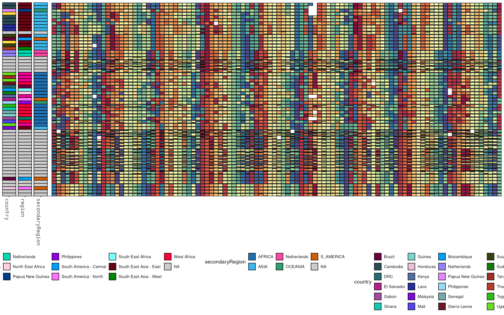
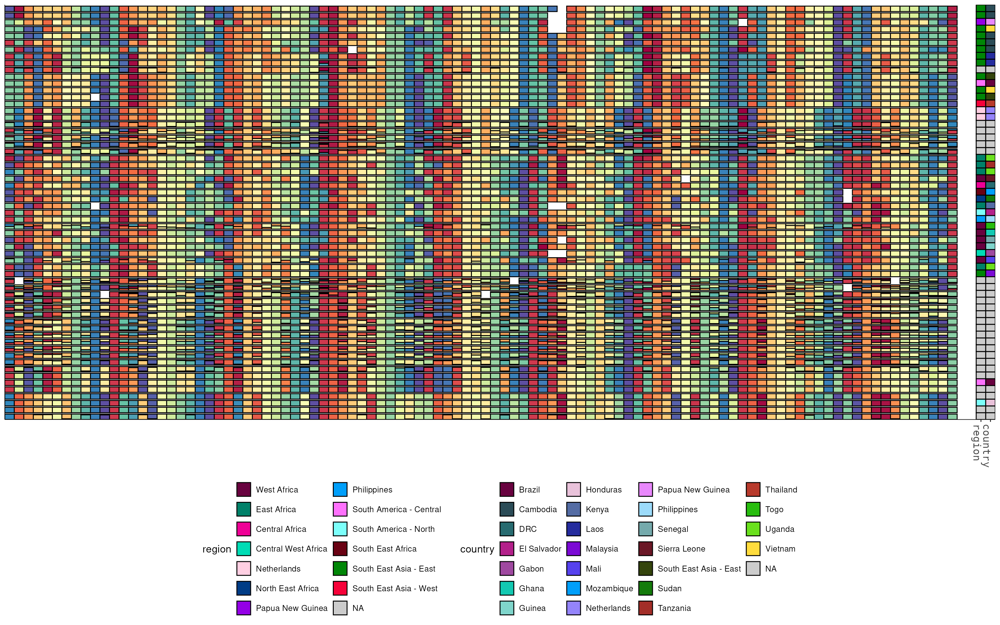
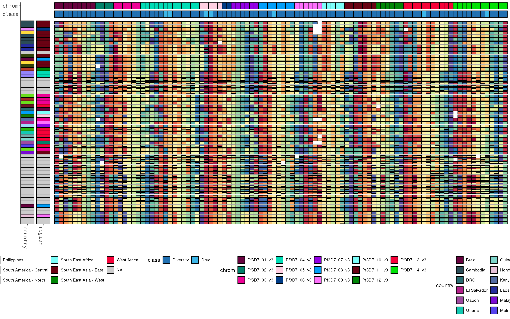

Attach per-sample and per-target metadata to the object once, then render it as coloured bands — a sidebar next to the rows, and a strip above/below the columns. This article covers attaching, sorting by, and drawing metadata, with the full set of sizing and legend options.
library(HaplotypeRainbows)
library(ggplot2)
data("pfisolateExample")
data("pfIsosHeomeV1_sampleMeta") # 61 samples x geography columns
data("pfIsosHeomeV1_targetMeta") # 100 targets x gene/class columns
rb <- HaplotypeRainbow$new(
pfIsosHeomeV1,
sample_col = "s_Sample",
target_col = "p_name",
popuid_col = "h_popUID",
rel_abund_col = "c_AveragedFrac"
)
rb$prep(sort = "population_rank")$sort_by_clustering()Attaching metadata
set_sample_meta() / set_target_meta() take
the metadata frame and the column that matches the sample / target
names:
rb$set_sample_meta(pfIsosHeomeV1_sampleMeta, match_col = "sample")
rb$set_target_meta(pfIsosHeomeV1_targetMeta, match_col = "target_name")They error if match_col (or a requested
cols) is absent, and warn + NA-fill any
samples/targets that have no metadata row. A second call replaces the
stored metadata by default; pass add = TRUE to merge extra
columns. Restrict to particular columns with cols:
rb$set_sample_meta(pfIsosHeomeV1_sampleMeta, match_col = "sample",
cols = c("country", "region"))
rb$set_sample_meta(more_meta, match_col = "sample", add = TRUE) # merge, don't replaceThe sample sidebar
add_sample_metadata() draws one coloured band per
metadata column to the left (or right) of the rainbow. Sizes are in
cell units: width/height of 1
matches a rainbow cell, 2 is double, 0.8 is 80% (centred). Band labels
are drawn independently of the sample / target names, so you can keep
them on when the target names are off:
p <- rb$plot(y_axis_labels = FALSE)
rb$add_sample_metadata(
p,
cols = c("secondaryRegion", "region", "country"),
width = 3, # 3 cells wide
gap = 0.5, # gap between bands
target_labels = FALSE # hide target names, keep the band labels
)
Colours are auto-assigned from the colour-blind palettes. The sidebar has knobs for placement, spacing, and — importantly for wide metadata — legend layout and order:
-
side = "right"moves it to the other side. -
plot_gapseparates the bands from the cells (default 1). -
legend_ncol/legend_nrowreshape big legends (a scalar for all bands, or a named vector per column) so they stay on the page. -
level_order(a named list per column) controls the legend entry order; unlisted values are appended in sorted order. -
colorsoverrides the auto colours per column;na_colorsets the missing-value fill;legend = FALSEdrops the legends.
p <- rb$plot(y_axis_labels = FALSE)
rb$add_sample_metadata(
p,
cols = c("region", "country"),
side = "right",
plot_gap = 2, # push off the rainbow
legend_ncol = c(country = 4, region = 2), # fold tall legends
level_order = list(region = c("West Africa", "East Africa")),
target_labels = FALSE
)
The target strip
add_target_annotation() is the transpose: coloured bands
above (position = "top", the default) or below the rainbow,
one per target-metadata column. Stack multiple columns and space them
with gap:
p <- rb$plot(x_axis_labels = FALSE, y_axis_labels = FALSE)
p <- rb$add_sample_metadata(p, cols = c("region", "country"), width = 3, gap = 0.5,
target_labels = FALSE)
# two stacked target layers: class (innermost) then chrom
rb$add_target_annotation(p, cols = c("class", "chrom"), height = 2, gap = 0.5,
plot_gap = 1, sample_labels = FALSE)
Put the strip below instead, and reshape its legend the same way as the sidebar: